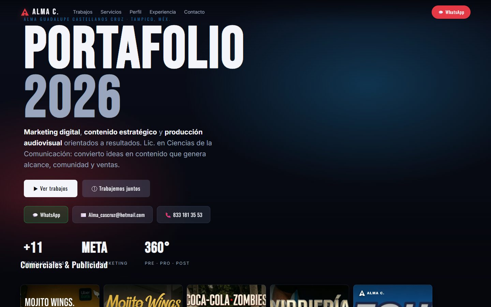

A portfolio that looks like a marquee
A landing page (a single-view presentation page) that shows commercials, reels, short films and projects as if they were a streaming platform's catalog.
Production website designed, built and deployed end-to-end for a digital marketing and audiovisual production professional: a cinematic billboard hero, a video catalog by category with hover previews, an integrated player and complete SEO (search engine optimization).
Live production deployment · published on GitHub Pages

A landing page (a single-view presentation page) that shows commercials, reels, short films and projects as if they were a streaming platform's catalog.
An audiovisual portfolio in a PDF or a list of links doesn't let people see the work. Videos are heavy, and a slow page loses visitors before the first click.
Category rows with a lightweight hover preview and original-quality playback on click, plus direct WhatsApp contact always in view.
A full-screen hero with the title, services and contact buttons.
Swipe through rows of commercials, reels and projects; on hover the card grows and plays a muted preview.
It opens in a player with title and description, vertical (9:16) or horizontal (16:9). Esc closes it.
The contact button sits in the bar, in the hero and at the end of the page.
All content lives in a single data file: adding a video means adding one line.
Horizontal rows by category with interactive cards. Each piece has a title, description, label (spot, reel, short), poster, a lightweight preview and a link to the original.
A modal player (a window over the page) plays each piece in original quality, with custom controls.
9:16 rows for reels and 16:9 rows for horizontal pieces, with scrolling that snaps to each card.
Hover previews only turn on for devices with a mouse, and no video downloads until it is needed: on phones the page stays light.
Open Graph metadata (the card that shows up when shared on social media) with a custom image, structured data for search engines, sitemap and robots.
Cards take focus and open from the keyboard; Esc closes the player.
No frameworks and no build step: three main files plus a data catalog. Fast to load and easy to maintain.
Scripts re-encode every piece to H.264 with "faststart", so playback begins before the file has fully downloaded.
A lightweight MP4 for the hover preview and the high-quality original, which only loads when the player opens.
Long pieces are encoded in two passes with a target bitrate, keeping quality high at a controlled size.
A script grabs a frame from each video as its poster and generates the social sharing image.
A static site (no server) on GitHub Pages, responsive on phones, with a bar that changes on scroll.